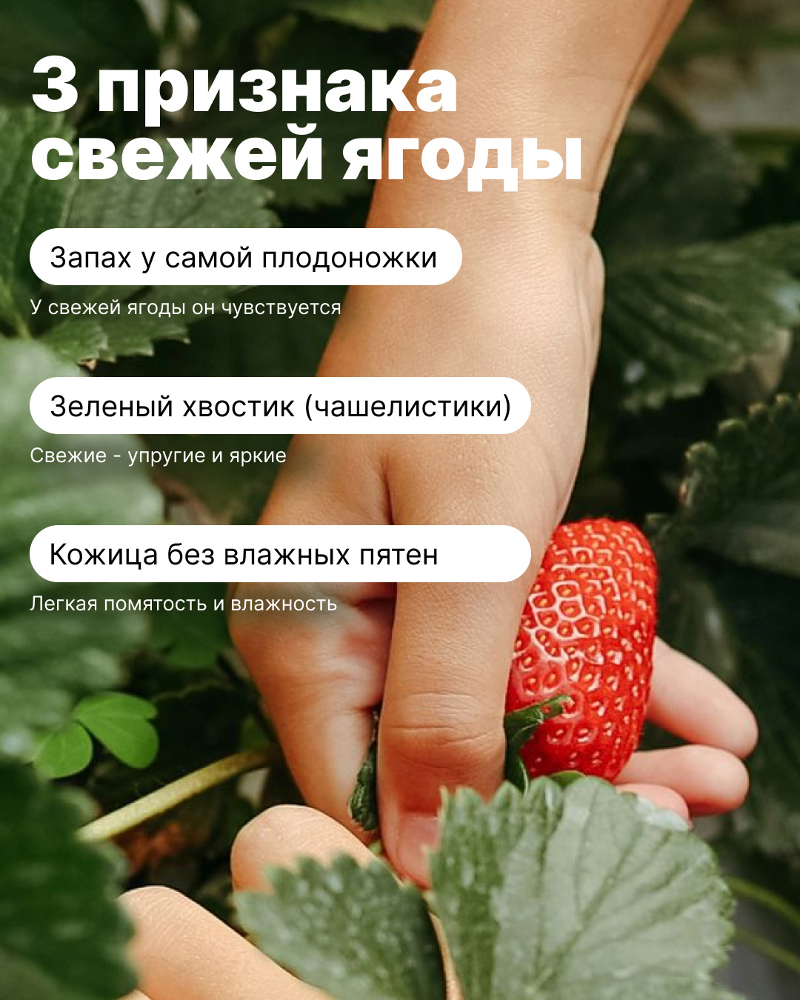
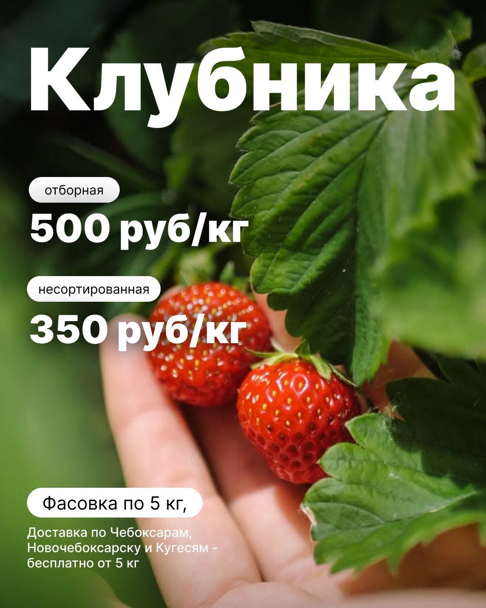
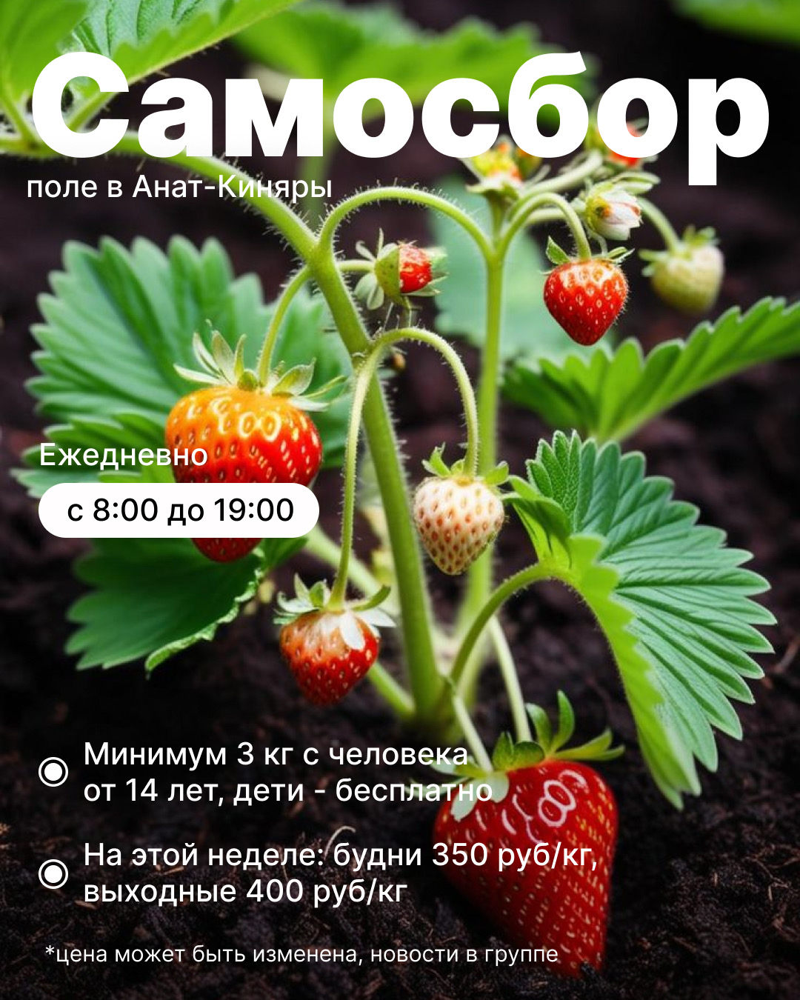
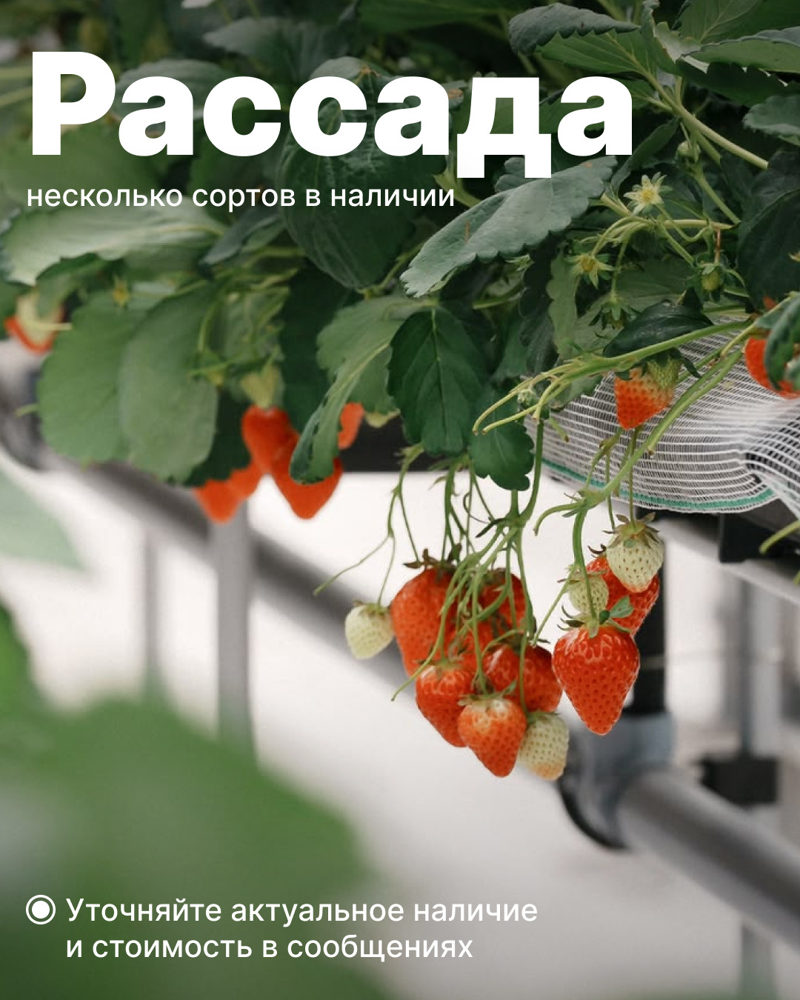
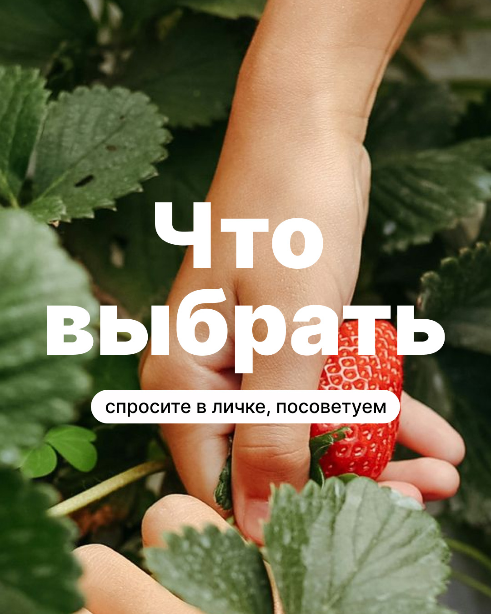
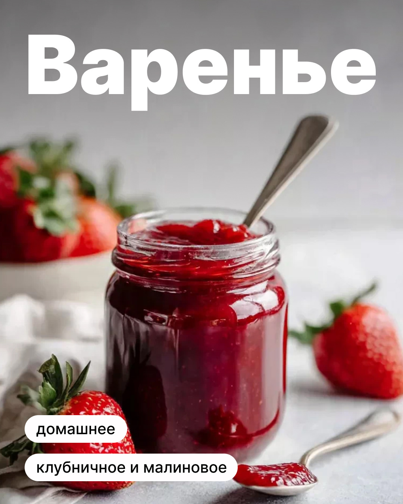

Фермерский бренд · сезонный контент · июль–август 2026
Как пять постов провели аудиторию от поля до понятного предложения
Короткая сезонная серия для «Ягодного Рая»: реальное хозяйство, полезный материал, работа с сомнением, отзыв и прямой следующий шаг. Дополнительно — карусель по ассортименту.
Подтверждаем созданный и утверждённый комплект. Продажи, заявки, охваты и рост аудитории без аналитики не приписываем.
Коммерческие условия внутри отдельных макетов относятся к периоду проекта и не являются текущим предложением.



Задача серии
Быстро усилить доверие в короткий сезон и показать выбор
Фермерскому проекту важно не просто сообщить, что ягода есть. Контент должен показать реальное хозяйство, помочь оценить продукт и сделать обращение естественным продолжением разговора.
Что нужно было донести
- за брендом стоит реальное поле и работа команды;
- свежую ягоду можно оценить по понятным признакам;
- фотографии показывают реальный продукт;
- покупатели уже делились обратной связью;
- у проекта есть несколько сезонных продуктов и форматов.
Как построили последовательность
Начали с поля и живого контекста, затем дали полезный материал, разобрали сомнение о фотографиях, добавили отзыв и завершили прямым предложением.
Главная логика: реальность → польза → снятие сомнения → социальное доказательство → действие.
Реальная работа
Познакомить с хозяйством через утро на поле.
Польза
Дать три признака свежей ягоды для сохранения.
Сомнение
Подвести к честному разговору о продукте на фотографиях.
Отзыв
Показать мнение человека, который уже заказывал.
Предложение
Сделать следующий шаг понятным в сезон.
Пять постов
Вся короткая серия — без выборочных обложек
Нажмите на любой макет, чтобы рассмотреть его крупно. Цифры внутри исторических материалов не используются на этой странице как актуальные условия.
Дополнение к пакету · 6 слайдов
Карусель помогает увидеть весь сезонный выбор
Один слайд — одна категория: ягода, самосбор, рассада, варенье и помощь с выбором.
Подарочная карусель · 6 слайдов
Что можно выбрать в сезон





1 / 6
Границы доказательств
Готовый комплект не равен выдуманному коммерческому результату
Кейс подтверждает произведённый контент и этап передачи в планирование, но не заменяет аналитику опубликованных записей.
Что подтверждено
- 5 утверждённых постов;
- дополнительная карусель из 6 слайдов;
- 11 финальных изображений формата 4:5;
- два круга правок;
- загрузка пяти постов в черновики двух площадок.
Чего мы не заявляем
Нет подтверждённых данных о продажах, заявках, охватах, подписчиках или окупаемости.
Нет прямых ссылок для независимой проверки публикации всех материалов. Условия внутри макетов не выдаём за актуальные.
Что ещё в производстве
Большое продолжение на 30 постов, включая 10 каруселей, принято в работу.
По состоянию на 5 августа 2026 года этот пакет не был завершён и не входит в результат страницы.
Нужен контент для сезонного продукта?
Соберите связный план и усиливайте каруселью ассортимент или сложную тему
Команда готовит темы, тексты и дизайн. Вы видите весь продукт до публикации и утверждаете материалы.